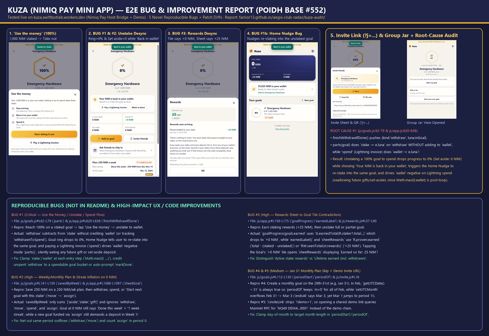
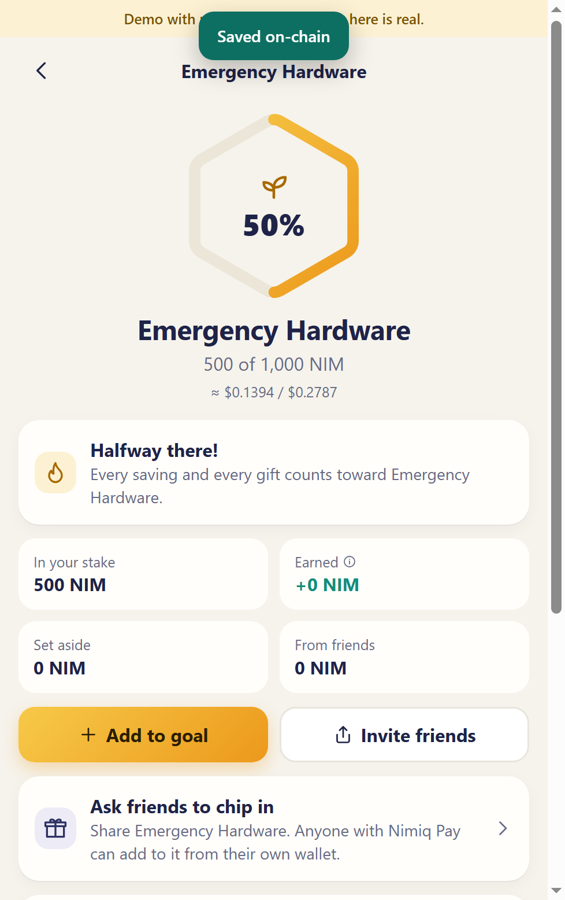
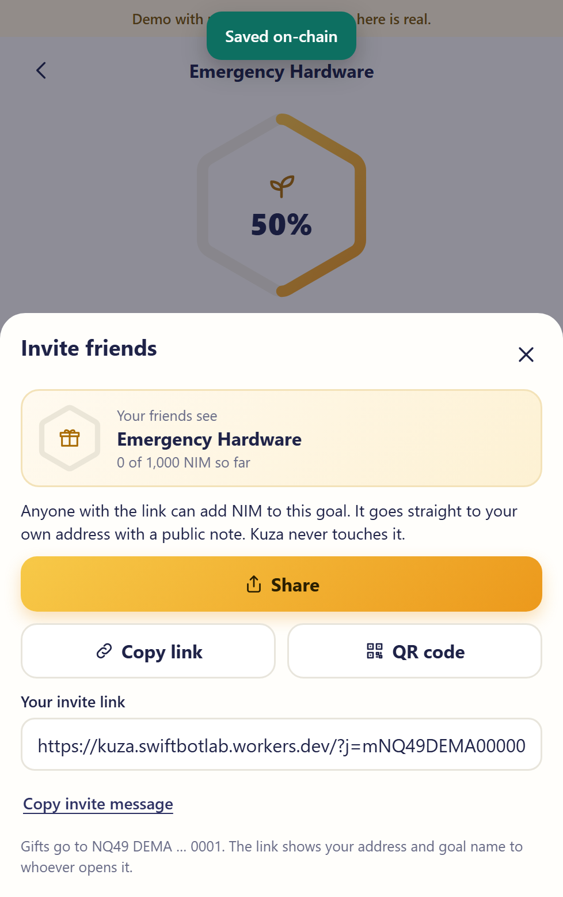
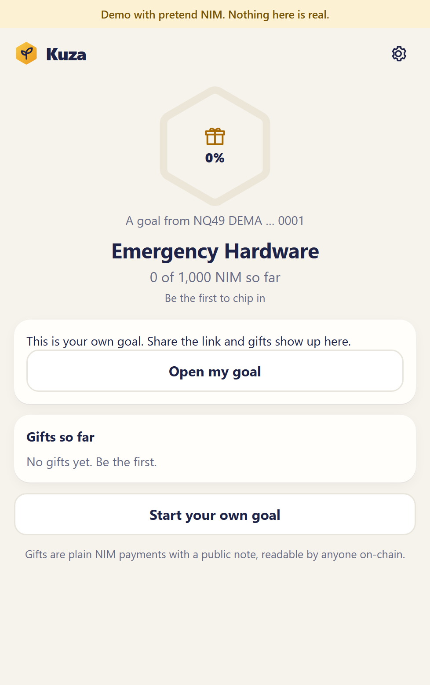
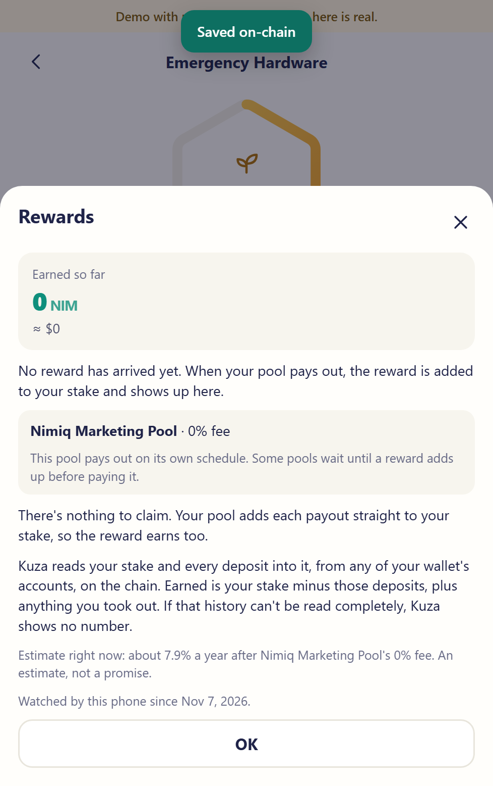
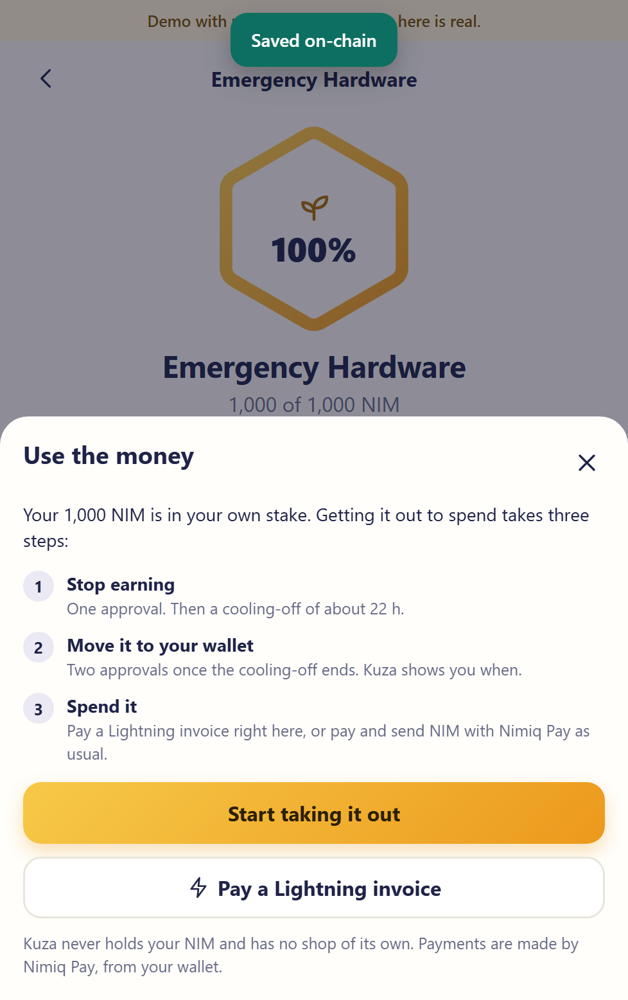
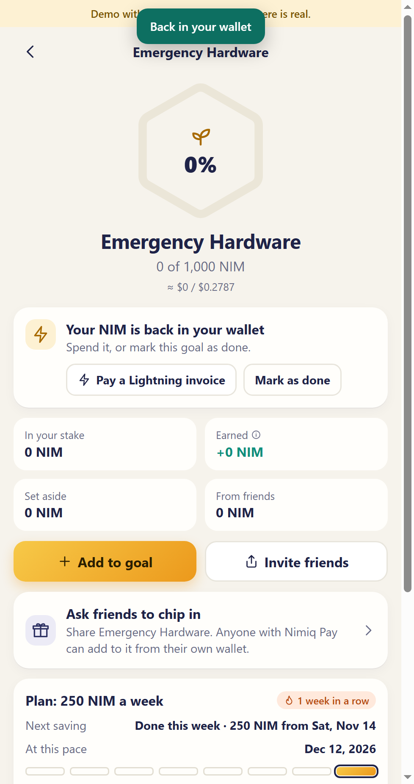
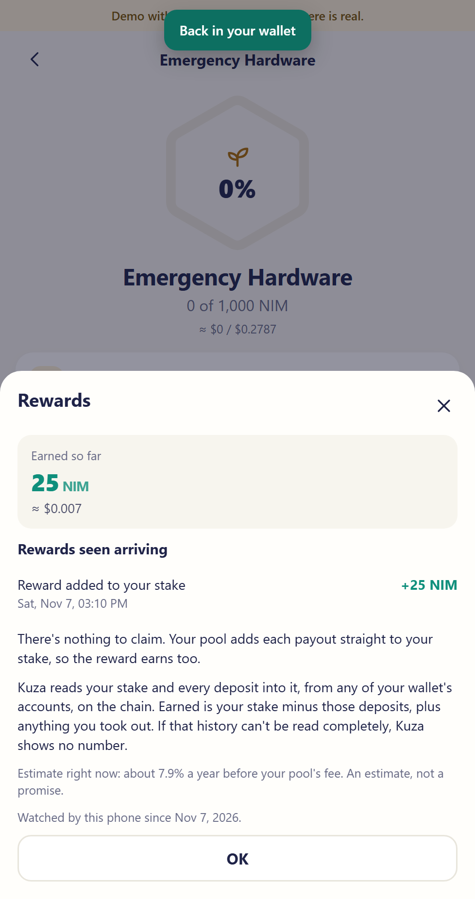
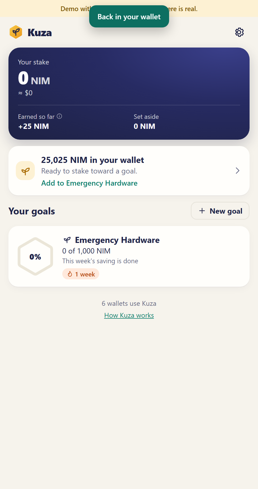

POIDH Base #552 / Web ID #1538) · Tested live against https://kuza.swiftbotlab.workers.dev/ & swiftbotlabs/kuza@main · All 7 known items in README.md ("What is still rough") excluded.

Flow 1: Goal with 250 NIM/week plan & 500 NIM staked (50% milestone).

Flow 2a: Share / Invite sheet & QR code (?j=mNQ49...).

Flow 2b: Opening the Invite Link (viewJar).

Flow 3: Opening the Rewards Sheet (sheetRewards).

Flow 4: Reaching 100% & walking through "Use the money" (sheetUse).

Live Bug #1 & #2 Proof: Ring drops to 0% & Set aside=0 while "Your NIM is back in your wallet" + "Done this week"!

Live Bug #3 Proof: Goal tile shows +0 NIM, but tapping it opens Rewards Sheet showing 25 NIM!

Live Bug #1b Proof: Home screen nudges user to re-stake the unstaked NIM back into the same goal!
js/goals.js#L62–L79, js/app.js#L620–L638)Steps to Reproduce:
Emergency Hardware, target 1,000 NIM, plan 250 NIM/week) and stake 1,000 NIM to reach 100%.sheetUse) → Start taking it out → complete cooling-off and release the stake back to the wallet (finishWithdrawIfDone()).shot8_post_unstake_contradiction.png), the Home screen (shot10_home_nudge_contradiction.png), and then pay a Lightning invoice (sheetPayInvoice).What Happened vs. Expected:
finishWithdrawIfDone() appends { kind: 'withdraw', luna: inGoal, status: 'ok' }. In G.parts(goal) (js/goals.js#L73), case 'withdraw': stake -= e.luna; break; subtracts from stake without adding to wallet (whereas case 'spend': wallet -= e.luna; subtracts Lightning invoice payments from wallet!). Consequently, while spentCard displays "Your NIM is back in your wallet — Spend it, or mark this goal as done", the Goal Hero ring immediately collapses from 100% to 0% (0 of 1,000 NIM) and the Set aside (inWallet) tile shows 0 NIM.notedInWallet() is 0 NIM while R.spendable increased by +1,000 NIM, walletCard() (walletNudge) immediately pops up telling the user they have unassigned NIM in their wallet and nudges them to "Add to Emergency Hardware" (re-staking into the exact goal they just unstaked from to spend!).spend): Because parts(goal) only calls Math.max(0, wallet) after the entry loop finishes (line 78) rather than clamping at each step, recording { kind: 'spend', luna: tx.value } when wallet === 0 drives the internal wallet accumulator to -1,000 NIM. If the user later receives a friend's gift or sets aside NIM in that goal, the negative accumulator silently swallows the new deposit!// Fix in js/goals.js (parts):
export function parts(goal) {
let stake = 0, wallet = 0, gifts = 0;
for (const e of counted(goal)) {
switch (e.kind) {
case 'aside': wallet += e.luna; break;
case 'gift': wallet += e.luna; gifts += e.luna; break;
case 'stake': stake += e.luna; wallet = Math.max(0, wallet - (e.fromWallet || 0)); break;
case 'assign': stake += e.luna; break;
case 'withdraw': stake = Math.max(0, stake - e.luna); wallet += e.luna; break; // NIM moved from stake back to wallet until spent or marked done
case 'move': stake = Math.max(0, stake - e.luna); break;
case 'spend': wallet = Math.max(0, wallet - e.luna); break;
}
}
return { stake, wallet, gifts };
}withdraw, move, spend, and assign (js/goals.js#L141–L150)Steps to Reproduce:
250 NIM/week plan, save 1,000 NIM, and then either unstake it (withdraw) or click Start the next goal (sheetGoal with from: goalA, which pushes kind: 'move' to Goal A and kind: 'assign' to Goal B).What Happened vs. Expected:
savedByWeek(goal) only inspects ['aside', 'stake', 'gift']. After unstaking all 1,000 NIM from Goal A, Goal A sits at 0% (0 of 1,000 NIM), yet both the Goal screen and Home card display "This week's saving is done · 1 week in a row" and paint the week bar gold!kind: 'assign'), savedByWeek(goalB) ignores assign, so Goal B immediately demands a full weekly deposit in Week 1 even though the user just funded it with their rolled-over stake.sheetRewards) vs. Goal Earned Tile Contradiction After Unstaking (js/app.js#L156–L175, js/rewards.js#L57–L90)Steps to Reproduce:
+25 NIM), and unstake (either partially across two goals or completely).[data-rig="goal-earned"]) and tap it to open the Rewards Sheet (shot9_rewards_contradiction_after_unstake.png).What Happened vs. Expected:
goalProgress(goal).earned calls G.earnedTotal(R.staker?.total ?? 0, st.baseline ?? 0, st.goals), which drops to +0 NIM once unstaked.earnedLabel()) and sheetRewards use R.proven.earned (which computes total - (staked - unstaked), where both total and net drop by the unstaked amount, leaving withdrawn rewards in earned!) or fall back to RW.seenTotal(st.rewards) when R.staker becomes null. Thus the user taps a button labeled Earned: +0 NIM and a sheet pops open saying Earned so far: 25 NIM!periodStart vs. periodOf (js/goals.js#L112–L130)Steps to Reproduce:
createdAt = Date.UTC(2026, 0, 31), Jan 31).periodOf(goal, at) and periodStart(goal, 1) across February and March 1–3.What Happened vs. Expected:
periodOf(goal, at), if (d.getUTCDate() < s.getUTCDate()) m -= 1; is always true for every day of February (Feb 1–28 all have getUTCDate() < 31), so m stays 0 for all of February (a 59-day first period!).periodStart(goal, 1) calls d.setUTCMonth(d.getUTCMonth() + 1) on Jan 31, which overflows JS Date into March 3. Then on March 1 (getUTCMonth() === 2), periodOf jumps to m = 2 - 1 = 1, two days before periodStart(goal, 1) (March 3)! Clamping the anchor day to the number of days in the target month resolves both bugs cleanly.I.inviteLink) Strips ?demo=1 & Queries Mainnet RPC for Pretend Address (js/invite.js#L18–L26)Steps to Reproduce:
https://kuza.swiftbotlab.workers.dev/?demo=1, create a goal, tap Invite friends, and copy the invite link: https://kuza.swiftbotlab.workers.dev/?j=mNQ49DEMA0000....What Happened vs. Expected:
I.inviteLink strips demo=1 from the URL while encoding the demo wallet address NQ49 DEMA 0000 ... 0001, opening the shared link exits Demo mode, renders the external browser landing (viewInvite), and queries Mainnet RPC (rpc.nimiqwatch.com) for the pretend address. Appending &demo=1 when DEMO is active (or detecting the DEMA address prefix) lets testers and users try the full friend-gifting flow seamlessly.sheetPayInvoice): When a user pays a Lightning invoice from a reached goal (js/app.js#L1450–L1463), Kuza closes the sheet and returns to the Goal screen without offering to close/archive the goal. Adding a checkbox or post-payment prompt ("Mark goal as done?") completes the lifecycle in one tap.sheetWithdraw): Because staking rewards accrue continuously, a user who staked 1,000 NIM and opens sheetWithdraw while a few Luna of rewards arrive mid-session can hit the rem > 0 && rem < MIN_STAKE (dust) warning if R.staker.active ticks up between opening the sheet and tapping submit. Auto-snapping withdrawals within MIN_STAKE of staker.active to staker.active prevents unnecessary dust friction.viewJar: When a friend opens an invite link (?j=...), jarHero shows 0 of 1,000 NIM so far (counting gifts only). If the owner has already staked 800 NIM of their own money and only needs 200 NIM from friends, encoding an optional remaining/gifts target or clarifying "0 NIM gifted by friends toward a 1,000 NIM goal" makes small contributions feel much more impactful.